Agent Instructions
Generating or reviewing anything for Houston's First begins here.
- Load
brand-kit.json. It is canonical and machine-readable; everything on this page is generated from it. - Prioritize Navy
#00365Bas the primary brand color, Gibson as the primary typeface (free alternative: Montserrat), and the five brand traits: Generous, Vibrant, Relational, Attentive, Genuine. - The logo is black or white only. Never recolor, restyle, or apply effects to it. Use the correct lockup and campus or ministry variant for the context.
- On the HoustonsFirstV1 Rock theme, author with theme classes such as
text-navy,bg-slate, andbtn-sky. Never hard-code hex values in page markup. - Format every name, date, and time per the
communicationsStyleobject: "Mon, June 17 @ 9a", "713.681.8000", never "HFBC". - Before finalizing, run every item in the
checklistarray.
Key Files
Everything ships in the repository. Clone it or download the ZIP.
| File | Purpose |
|---|---|
| brand-kit.json | Machine-readable brand data; colors, typography, logo rules, voice, communications style, campuses, checklist |
| guidelines.md | Machine-readable brand guidelines |
| guidelines.md | Human-readable brand guidelines |
| assets/logos | Primary logo files; all lockups, black and white, campus and ministry variants |
| assets/logos/Ministry Logos | Sub-brand logos for every ministry, in their approved formats |
| assets/fonts | Font licensing links, the Montserrat family, and free alternatives |
| assets/embellishments | Approved decorative patterns and graphic elements |
Color
Core colors carry the brand; accents highlight, matched to season. Each color includes 75, 50, and 25 percent tints.
Type System
Gibson leads; Tisa Pro warms the subheadings. This page renders the free Google alternatives.
Body copy in Gibson Light. Switch to Gibson Book when legibility needs a boost, such as small sizes or long-form reading.
Futura PT Condensed Book carries dense copy in tight spaces, such as event flyer detail blocks.
| Role | Adobe (licensed) | Google (free) |
|---|---|---|
| Microtitles, CTAs, headlines, body | Gibson | Montserrat Extra Light |
| Subheadings | Tisa Pro | Gentium Book Plus |
| Dense or condensed copy | Futura PT Condensed | Barlow Condensed Thin |
Logo
The campuswide logo is the default for general communications. Official source files, including vector and print formats, live in assets/logos.
The logomark is a cross centered in three concentric circles. The circles carry the vision — Relevant, Biblical, Community — lived out through the strategy: Gather, Grow, Give.
Lockups
Color variations
Lockups & sizing
- Primary (horizontal) is the default for web headers and most applications
- Stacked suits portrait layouts, brochures, and compact spaces
- Logomark only for app icons and merchandise; on print, the full church name must appear on the piece
- Clearspace equals half the logomark's height on all sides; minimum sizes are 0.3 in (primary) and 0.75 in (stacked)
Never do
- Stretch, warp, skew, or slant
- Rearrange elements or retype the wordmark
- Apply shadows, glows, outlines, or added elements
- Use any color other than black or white
- Place the color logo on a busy or dark photo; use the white version over a dark overlay
Ministry Logos
Each ministry carries its own approved logo within the Houston's First family. Use the campuswide logo for general communications and a ministry logo only for that ministry's content. Full format sets live in assets/logos/Ministry Logos.
Next Generation
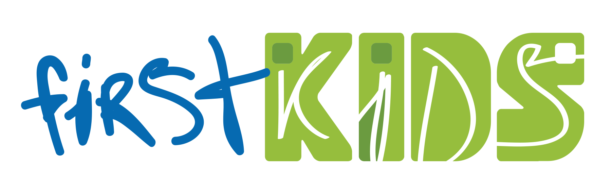
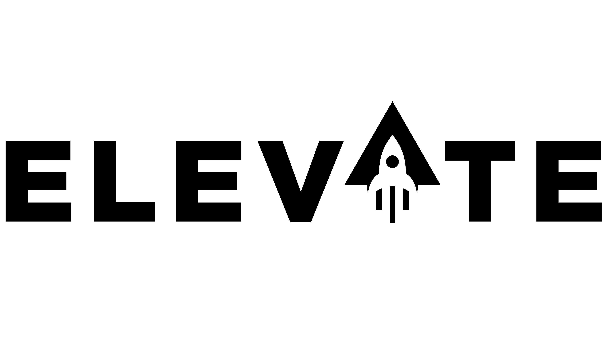
Worship
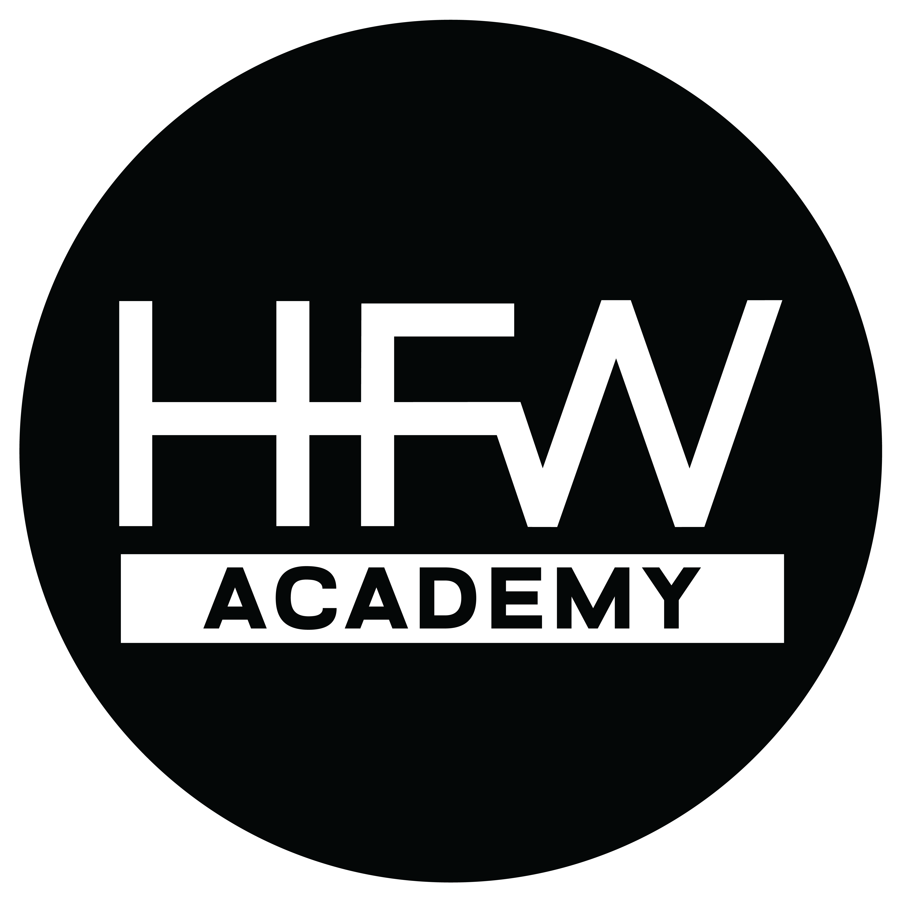
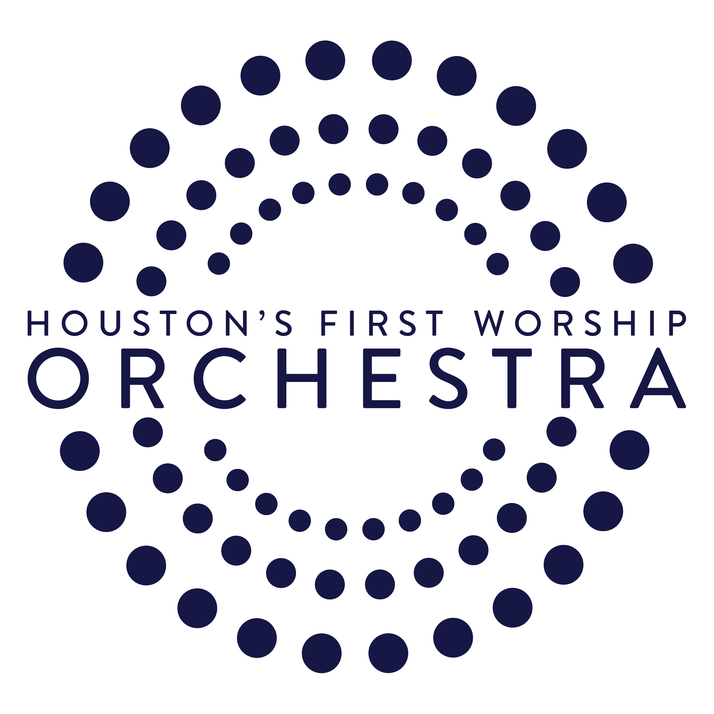
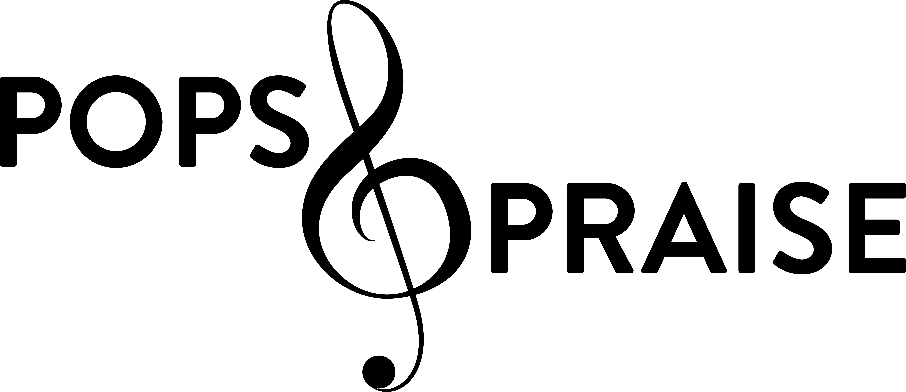
Missions & Outreach
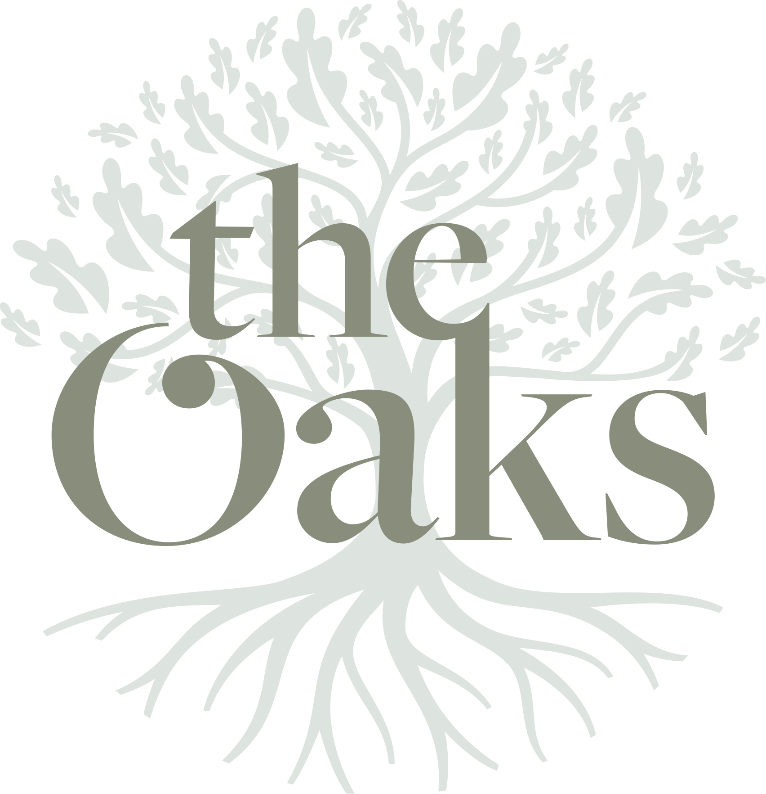
Adults & Groups
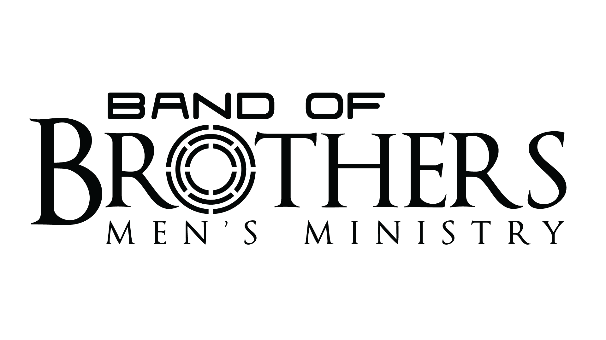
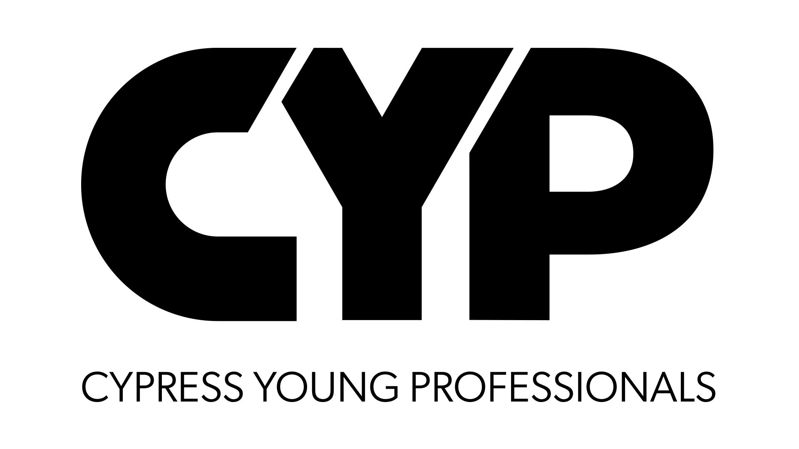
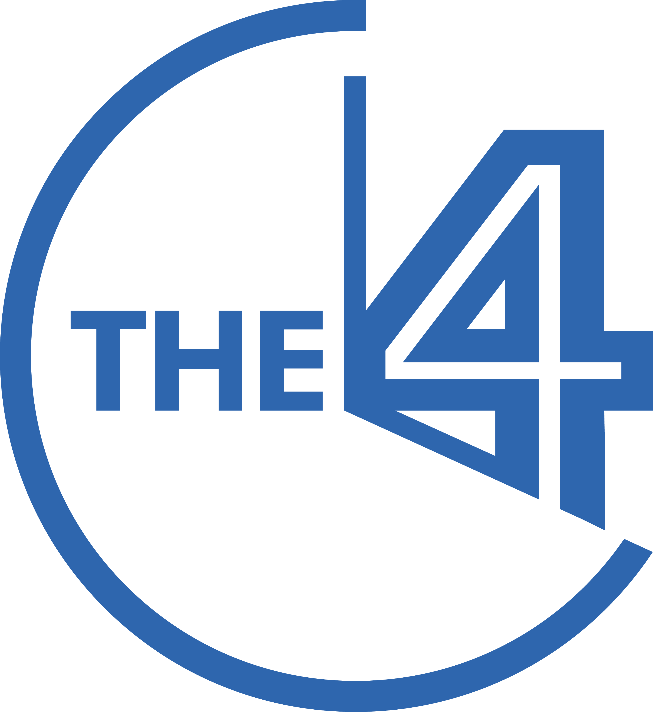
Care & Church-wide
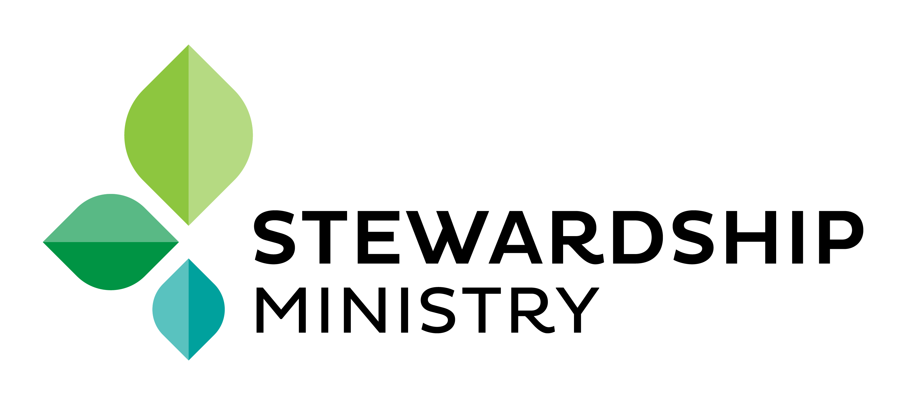
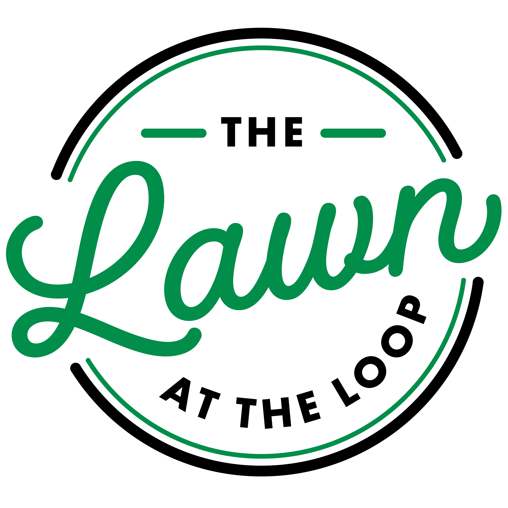
Campuses
Use the campuswide logo for general communications; a campus-specific logo only for campus-targeted content. Exact campus names are canonical — never "Main Campus" or "HFBC Cypress".
Houston, TX 77024
Cypress, TX 77433
Houston, TX 77043
Missouri City, TX 77459
Patterns & Texture
Approved woven and textured patterns add depth to backgrounds. Keep them subtle and behind content, never competing with the logo or headlines. Source files live in assets/embellishments.
Voice and Traits
Write like a warm, confident, real person; not a press release, not a sermon outline. Every asset leans into at least one trait.
| Trait | Core Message | Tagline |
|---|---|---|
| Generous | Gratitude expressed through whole-life giving | "We have so much to be grateful for." |
| Vibrant | Lively, joy-filled community of spiritual growth | "Life is full, and so are our hearts." |
| Relational | Close connections; everyone known and valued | "Connected hearts, shared journeys." |
| Attentive | Present every day, not just Sundays | "Every person, every day." |
| Genuine | Honest about imperfections; real grace | "Real stories, real grace." |
Do
- Use "we" and "you"; relational and direct
- Lead with the human tension before the church answer
- Be honest about struggle; invite rather than command
- Reference Jesus and faith naturally
Don't
- Use insider jargon without context
- Be preachy, guilt-inducing, or salesy
- Say "Sunday School"; it is "Life Bible Study"
- Assume the reader already attends
Communications Style
The quick reference. Full rules live in brand-kit.json under communicationsStyle.
| Rule | Correct | Incorrect |
|---|---|---|
| Church name | Houston's First · HoustonsFirst.org | HFBC · Houstons First · hfbc.org |
| Phone | 713.681.8000 | 713-681-8000 · (713) 681-8000 |
| Firstname.Lastname@HoustonsFirst.org | firstname.lastname@houstonsfirst.org | |
| Dates | Mon, June 17 · Wednesdays, Oct 5–26 | June 17th · Every Wednesday |
| Times | 9a · 2:30p · Noon · 9–11a · 8a–10p | 9 a.m. · 9:00 AM · 12p |
| Date and time | Mon, Nov 28 @ 9a | Mon, Nov 28@9a · Nov 28 - 9a |
| Divine pronouns | His · Him · He (for God or Jesus) | his · him · he |
| Campuses | The Loop Campus · Cypress Campus | Main Campus · HFBC Cypress |
Final Checklist
- Logo: correct lockup, black or white only, clearspace respected, unmodified
- Colors: core dominates, accent sparing and in season, no unapproved colors
- Typography: Gibson and Tisa Pro (or approved alternates), correct hierarchy
- Voice: warm, relational, genuine; not preachy or insider-only
- Copy: exact church, campus, and ministry name spellings
- Dates and times formatted per the style guide
- One audience per asset: external families or internal members
- At least one brand trait clearly reflected